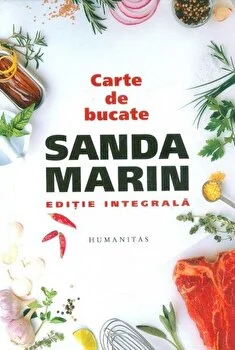

Carte de bucate
Sanda Marin
In cei aproape 70 de ani de cand domneste, nedetronata de nimeni, in bucatariile noastre, Sanda Marin a ajuns sa insemne pentru romani gustul mancarii de acasa. Acesta e ingredientul secret din cele peste 1500 de retete adunate in prezenta editie integrala.
Peste 1500 de retete: mai multe decat in oricare dintre editiile publicate din anii 1930 pana astazi, intr-un volum "restaurat", astfel ca pretiosul, vechiul continut sa capete o forma editoriala moderna.
Cea mai cunoscuta, cea mai longeviva, insasi cartea de bucate a romanilor -- intr-o formula capabila nu numai sa va hraneasca nostalgiile, ci si sa va fie utila in urmatorii 50 de ani.
Un amanunt, in editia de fata veti gasi informatii inedite despre cea care si-a publicat Cartea de bucate sub pseudonimul Sanda Marin.